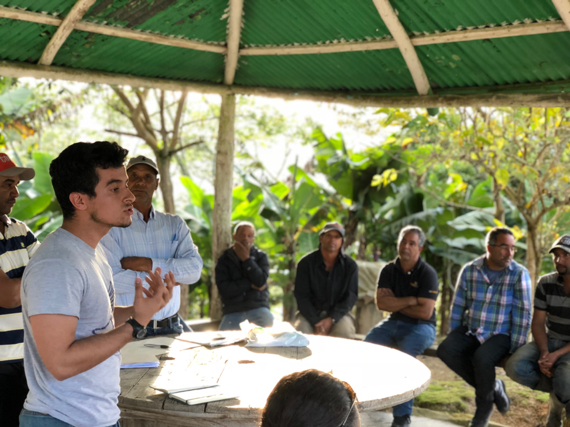
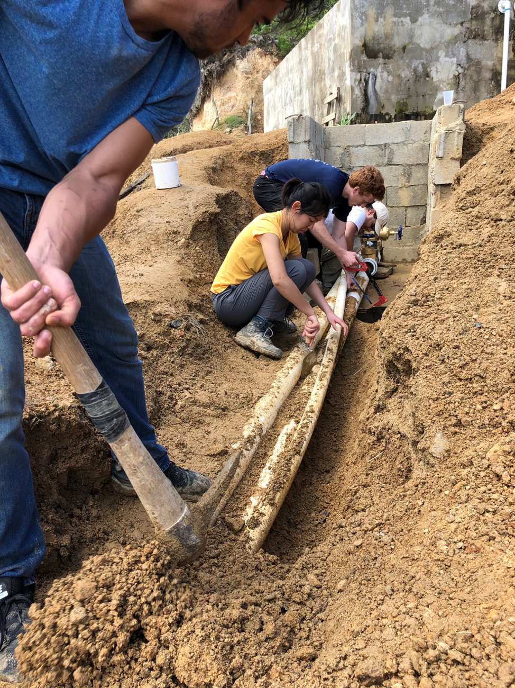
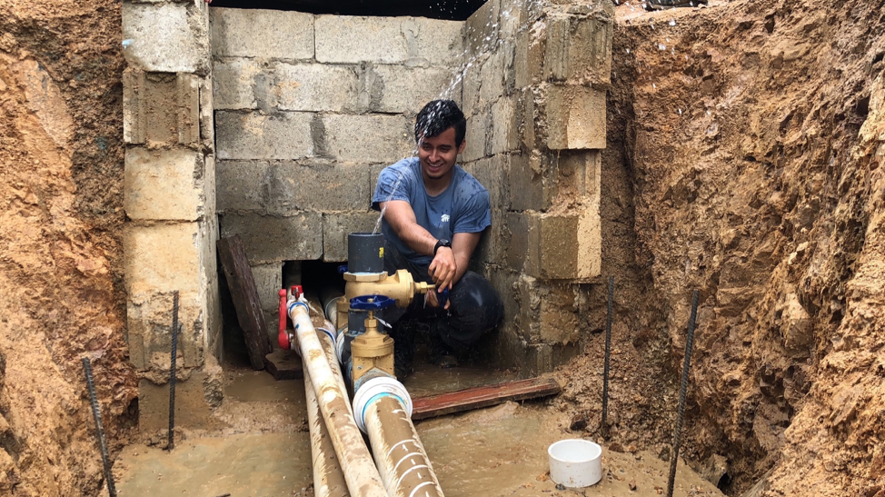
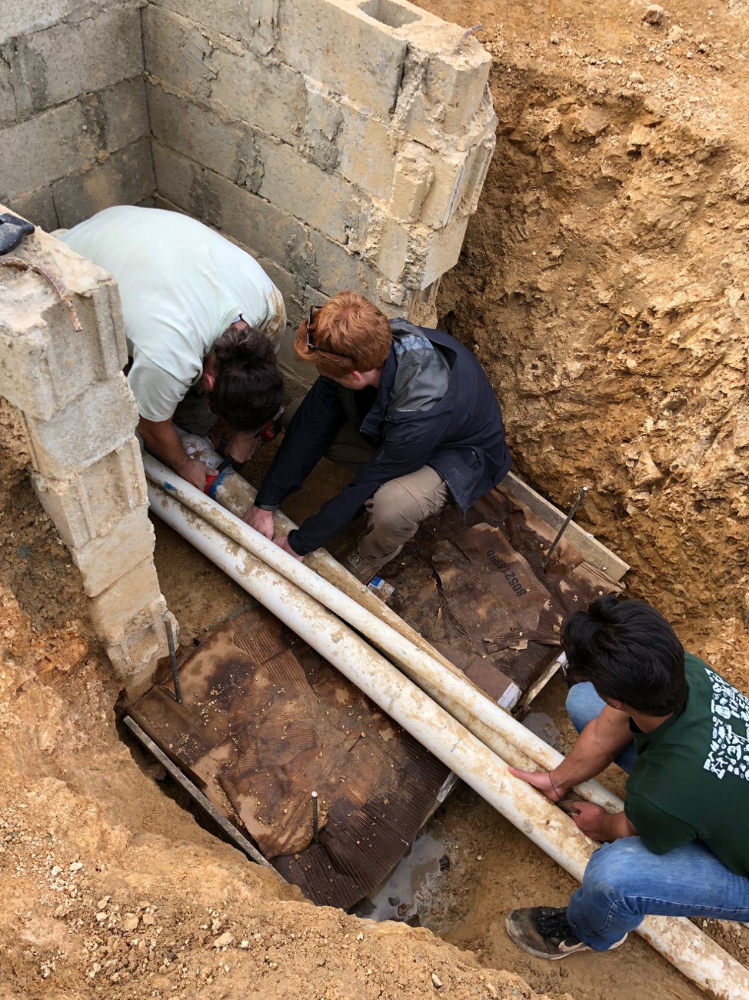

Los Sanchez Water Supply Project

Figure 1: Project lead Santiago Vargas(Chemistry and Physics, AB) talks to the community members of Los Sanchez in a community meeting.The Los Sanchez project was started in 2016 with the aim of providing a community in the Dominican Republic with reliable access to clean drinking water. At the start of the project in January of 2016, a travel team of 7 students and 1 professional mentor visited Los Sanchez and conducted household surveys, collected geological data, and tested water samples. The data from that assessment trip was then brought back to campus and used by the Harvard College Chapter of Engineers Without Borders USA to design a gravity fed water system to service the community.
 In the summer of 2017, a travel team of 8 students and 2 professional mentors constructed about a third of the water system for the community. They did this by connecting a well to a tank and connecting distribution pipes from the tank to houses in the community. They also built valve boxes to secure the control points of the water system. At the conclusion of the trip, 57 houses had been connected to water for 24 hours a day at high pressure.
In January 2018, a team led by McKenna Roberts (Biomedical Engineering, SB) and Santiago Vargas (Chemistry and Physics, AB) travelled to Los Sanchez to conduct surveys of the parts of the community that were yet to be connected to the system- a region known as La Mercedes. They did more than just conduct surveys; they also made repairs to the distribution lines, rebuilt a valve box and successfully tested the quality of various water sources in the community.
In the Spring of 2018 the team is using the data from the surveys of the January 2018 assessment trip to continue with the design of the system. Staying in contact with the community is vital to planning implementation trips and accessing general information about the site and community for which the chapter is designing the system. Samuel Fernandez (Statistics) is in charge of translation tasks between community members in Los Sanchez and the Harvard Chapter of Engineers Without Borders.
Figure 2: From left, Samuel Fernandez (Statistics, AB), Anisha Dok(Electrical Engineering, SB), Michael Connors(Mechanical Engineering, SB), and Chris Lombardo (Professional mentor and advisor) excavate and cut pipes.
One of the recent developments is the successful modelling of the distribution system in EPANET. This includes modifying parameters to ensure appropriate water pressures at the taps and in the pipes, in addition to designing the layout of the pipes according to the geography of the community. Tasks pertaining to modelling in EPANET are currently being conducted by the Hydraulics team which consists of Anisha Dok (Electrical Engineering, SB), Jacquelyn Ho (Physics, AB) and Andrew Yang (Biomedical Engineering, SB).
The chapter is also looking into alternative water sources. Research on spring boxes and well drilling is currently being done by Victor Yang(Computer Science, AB), Alejandro Garcia-Zhang(Mechanical Engineering, SB), and Tony Turner(Mechanical Engineering, SB).

Figure 3: Project lead Santiago Vargas(Chemistry and Physics, AB) opening a gate valve with excitement.Michael Connors (Electrical Engineering, SB), Juliet Nwagwu Ume-Ezeoke (Mechanical Engineering, SB) and Katrina Gonzalez (Undeclared) are working on the design of break pressure tanks to rid the system of excess water pressure. The project is currently working to expand the system into the areas of Alta Gracia and Lower La Mercedes. There exists a large elevation drop between the water tank and these lower areas, so a break pressure tank is needed to alleviate the risks of high pressure. High pressures can damage the piping, as well as make the system unusable for residents. Design of this feature involves hydraulics calculations, contact with in-country suppliers, and use of CAD software.
The chapter is also looking into integration of all the CAD designs into just one CAD software called AutoCAD Civil 3D. In the past, the design of systems and structures has been done using separate kinds of software that were only capable of independently modeling structures or sub-systems. Migration to AutoCAD Civil 3D will allow for the structures and sub-systems to be connected and modelled on a single site thus providing a holistic view of the design of the distribution system. Design migration tasks are currently being conducted by Billy Koech (Electrical Engineering, SB).

Figure 4: From left, Chris Lombardo (Professional mentor and advisor), Michael Connors(Applied Math, AB), and Samuel Fernandez (Statistics, AB) cutting a pipe in the valve boxWhen the tank was built by the local government, the interior of the tank was not waterproofed. On the January 2018 assessment trip, the team documented the structural issues of both the interior and exterior of the tank. After discussing with masonry professionals, the team found that the most imminent problem is rust jacking, which is caused by water from the interior penetrating the porous wall and rusting the metal rebars inside the walls, which in turn causes the vertical movement of masonry structures. Thus, the team plans to waterproof the interior of the tank this upcoming summer and is in the process of researching waterproofing solutions.This research is being conducted by Eva Cai (Bioengineering, SB) and Joyce Lu(Statistics, AB).
Not all the repairs from that January trip could be completed because some of the damages required reassessment and redesign such as some broken saddles. A saddle is pvc accessory used to connect a 4’’ pipe to a ¾’’ pipe at a right angle for the purpose of branching from a main pipe to a local house pipe. Lyra Wanzer (Mechanical Engineering, SB) and Nathaniel Twining (Applied Math, AB) are working on the assessment of factors that caused the breakage of saddles, and they are looking into possible protection methods for the saddles.
In the summer of 2018 the team plans to connect the remaining 50 houses to the water system. The team also plans to construct a break pressure tank, find a water source for La Mercedes and complete the repairs of the system in the parts that are broken.
From left: Figure 5: A reconstructed valve box. This valve box was rebuilt in January 2018. It houses valves for pipes from the well and pipes to the main line. Figure 6: A broken saddle (A saddle is pvc accessory used to connect a 4’’ pipe to a ¾’’ pipe at a right angle for the purpose of branching from a main pipe to a local house pipe.)